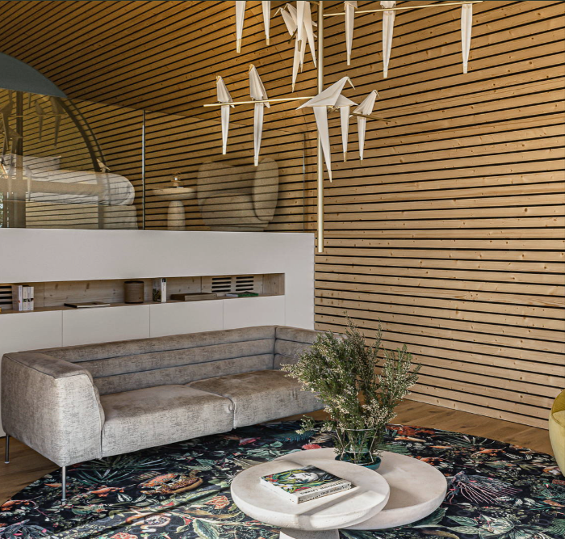
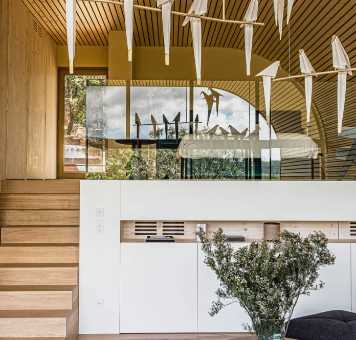

nature brute et préservée
Hébergement insolite pour un séjour dans l’Hérault, en Occitanie
voir le film complet
sur le toit du monde
Au cœur d’une nature brute et préservée, monts sauvages, vignoble classé et villages pittoresques colorent la toile de fond de votre échappée bucolique à Cabrières. Tout au bout du petit sentier jalonné de chênes centenaires, déjà enivrés par les essences envoutantes de garrigue, vous distinguez Souki Lodges & Spa.
Au pied du Pic de Vissou, dans un cadre remarquable pour son patrimoine historique exceptionnel, sa géologie singulière et son paysage façonné par les richesses naturelles de la région, les deux lodges sont une ode à la nature authentique. Imaginés comme deux cocons végétaux, ces trésors de l’architecture éco-pensée s’équilibrent entre matériaux nobles et mobilier design et vivent en parfaite harmonie avec la flore endémique.
Dans votre cabane en bois, les frontières entre ciel et terre semblent
s’effacer pour dessiner un éden suspendu et hors du temps. Comme une
apologie de la bohème, s’y cultivent la tranquillité raffinée et l’élégance
décontractée d’une balade à vélo, d’un massage en pleine nature, et d’un
moment de plénitude dans votre piscine privée, oasis de bien-être
intégrant jets de massage, bulles et canons à eau pour une expérience de
relaxation absolue. Sous le ciel étoilé, entre les reflets de l’eau et les
silhouettes des montagnes, chaque instant devient une promesse de
bonheur et d’évasion. De la nage à contre-courant aux moments de
détente enveloppés par la nature, votre piscine devient le cœur vivant de
votre échappée, où le rêve et la réalité se mêlent en harmonie
Découvrez nos lodges


Prestations
Découvir